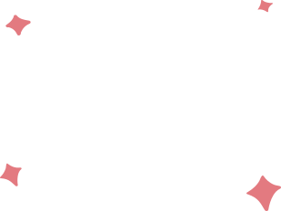
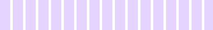

Skip
Generating your personalized learning path


Your personalized learning path
Week 1 • Rise of Islam Era
Explore Mecca before Islam and how a night in Hira Cave changed the world.
Week 2 • Women of Islam
Explore Mecca before Islam and how a night in Hira Cave changed the world.
Week 3 • Rise of Islam Era
Explore Mecca before Islam and how a night in Hira Cave changed the world.